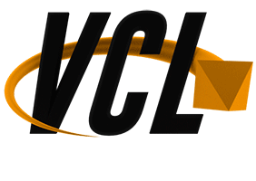

<div class="text-center modal fade" id="startUpModal" tabindex="-1" role="dialog" aria-labelledby="myModalLabel" aria-hidden="true">
  <div class="modal-dialog">
    <div class="modal-content">
      <div class="modal-header">
        <button type="button" class="close" data-dismiss="modal" aria-hidden="true">&times;</button>
        <h4 class="modal-title" id="myModalLabel">Wilkommen im Projekt Virtueller Campus Lingen</h4>
      </div>
      <div class="modal-body">
        <div>
          
          <div class="inline-image"><div>
        </div>
        Dieses Studienprojekt bietet Ihnen die Möglichkeit sich frei durch den Campus Lingen zu bewgegen.
        Klicken Sie auf die <b>Karte</b> (rechts unten im Bild), um eine Liste interessanter Sehenswürdigkeiten zu sehen. Hier können sie sich über die einzelnen Studiengänge des Hochschulstandortes informieren.
        <br/>
        <div class="well" style="padding: 5px;">
        Eine optimale Darstellung kann nur in aktuellen Internetbrowsern garantiert werden. Es wird empfohlen <b>Google Chrome</b> ab der Version 30 für diese Anwedung zu verwenden.
        </div>
      </div>
      <div style="padding: 17px 19px 5px;" class="modal-footer">
        <button type="button" class="btn btn-success" data-dismiss="modal">Campus Rundgang starten</button>
      </div>
    </div>
  </div>
</div>
<script>
  $(window).load(function(){
    $("#minimap-hint-arrow").show("slide", 1500);
  });
</script>